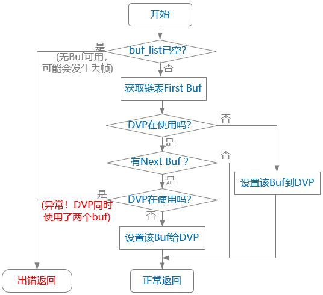

关键流程设计
初始化流程
总体上看，DVP 驱动的初始化过程分为两大段：
-
由 probe() 接口完成中断申请、管理状态初始化，主要任务包括注册中断处理函数、初始化全局变量和数据结构。
-
由 open() 接口完成，需要等 Sensor 执行完初始化后才能执行。完成的操作包括使能时钟、使能 DVP 控制器、初始化 Buf 链表信息等。
Buf 管理
Buf 管理涉及以下关键操作：
- 初始化 Buf 队列。
- 分配和释放 Buf。
- 将 Buf 添加到空闲队列或工作队列。
详见 MPP VIN 模块中的 Buf 队列管理
中断处理流程
-
HNUM Interrupt
用于判断当前 Register 是否可以修改。出现 HNUM Interrupt，表示当前图像帧已经完成 1/4 帧（驱动中默认配置）数据的刷新，意味着此时的 Buf 相关 Register （影子寄存器）可以被修改，软件可以传入下一个 Buf 的参数了。
-
Frame done
用于判断当前 buf 是否完成（done 状态）。出现 Frame done，表示当前帧的数据传输完成，此时该 buf 可以从 QBuf list 切换到 DQbuf list。
按照 DVP 硬件设计的逻辑，HNUM Interrupt 和 Frame done 会间隔着产生，如下所示：
HNUM Interrupt -> Framedone -> HNUM Interrupt -> Frame done -> HNUM Interrupt -> Frame done...

- “处理 Frame done 事件” 的子流程如下：

图 2. DVP 驱动中 Frame done 处理流程 -
“处理 HNUM Interrupt 事件” 的子流程如下：
图 3. DVP 驱动中 HNUM Interrupt 处理流程 -
- “异常！DVP 同时使用了两个 Buf”
-
理论上不应该发生，可认为是一种异常，但因为 DVP 此时正在向 Buf 写数据，所以先不执行 stop，软件上报错。
-
- “DVP 在使用”
-
表示 “DVP 控制器硬件正在使用”。
-